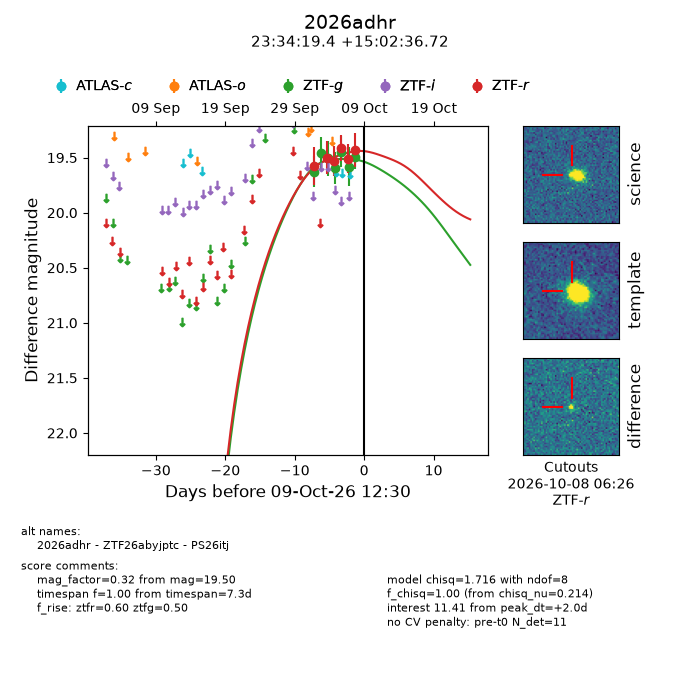
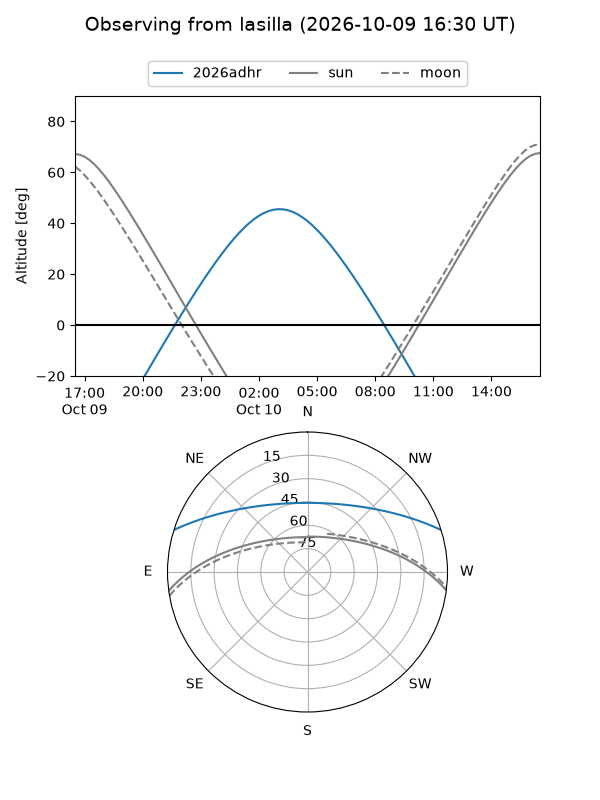
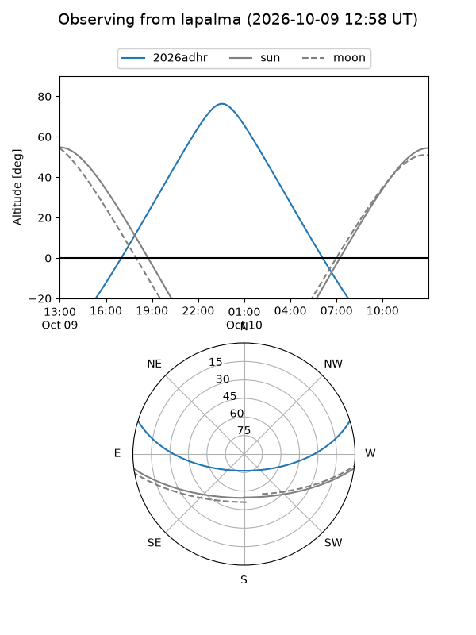
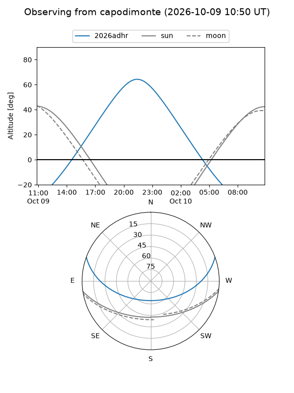
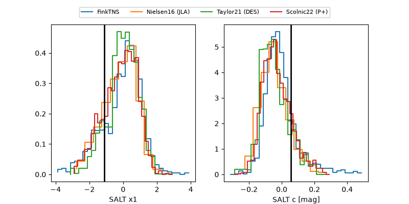

2026adhr
Target 2026adhr at 2026-10-09 12:32
Aliases and brokers:
FINK-ZTF: ztf.fink-portal.org/ZTF26abyjptc
Lasair-ZTF: lasair-ztf.lsst.ac.uk/objects/ZTF26abyjptc
ALeRCE-ZTF: alerce.online/object/ZTF26abyjptc
YSE-PZ: ziggy.ucolick.org/yse/transient_detail/2026adhr
TNS name: wis-tns.org/object/2026adhr
Direct TNS query: direct search
alt names
ZTF26abyjptc (ztf,fink_ztf)
2026adhr (tns,yse)
PS26itj (panstarrs)
Coordinates:
equatorial (ra, dec) = 353.5808,+15.04353
equatorial (HMS+DMS) = 23:34:19.40,+15:02:36.72
galactic (l, b) = (96.6856,-43.86319)
Flags:
peak dt: +2.0
Photometry:
last ztfg=19.50, ztfr=19.43
7 ztfg, 6 ztfr detections
Lightcurve

Visibility



Additional plots
